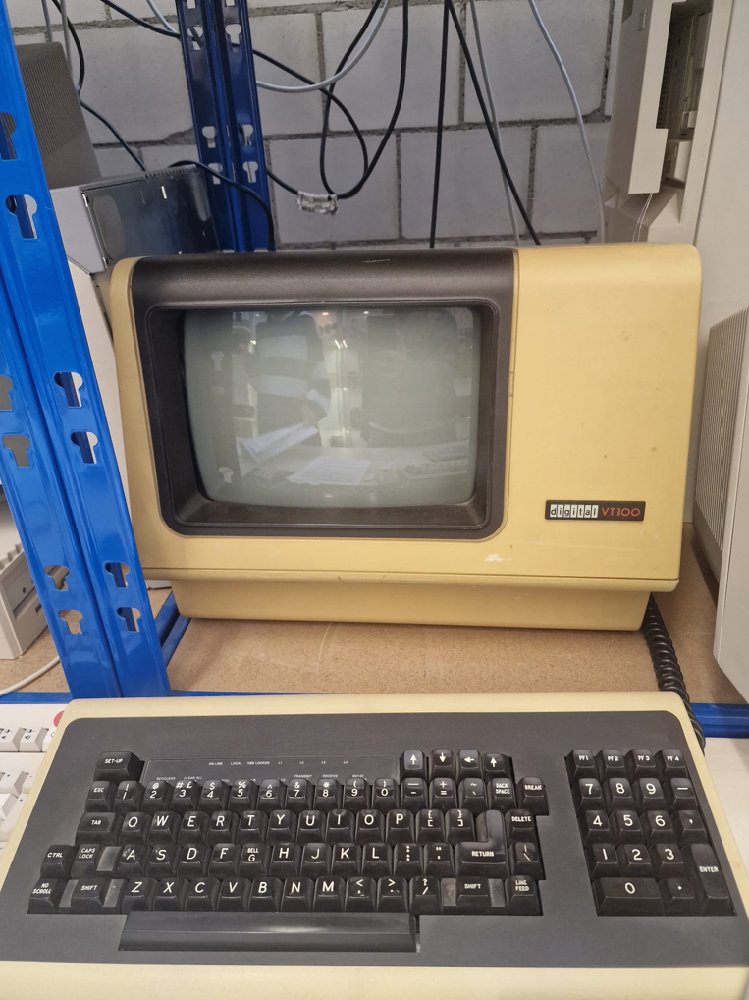

Steckbriefe Unix-Workstations & Server
Home
Sun Workstation
Indigo Workstation
Apollo Workstation/Server
Digital Workstation

DIGITAL VT100
Basisdaten
Modell:
VT100
Baujahr:
1978
Kategorie:
Computerterminal / Video-Terminal
Hersteller:
Digital Equipment Corporation (DEC)
Typischer Verwendungszweck
Textbasierte Mensch-Computer-Interaktion
Ein- und Ausgabegerät für zentrale Computer
Minicomputer oder Großrechner bedienen
Der VT100 war kein eigenständiger Computer, sondern diente als Terminal für zentrale Rechner.
Ablösung durch
VT200-Serie (ab 1983)
Terminal-Emulatoren auf PCs
Allgemeiner Technologiewandel zu moderneren Systemen
Besonderheiten
ANSI-kompatible Steuersequenzen (De-facto Standard)
Anzeige von 132 Spalten möglich
Unterstützung von blinkenden, inversen und unterstrichenen Zeichen
Setup über Bildschirmmenü statt physischer Schalter
Grundlage für moderne Terminal-Emulatoren wie xterm
Zur späteren Sun Workstation